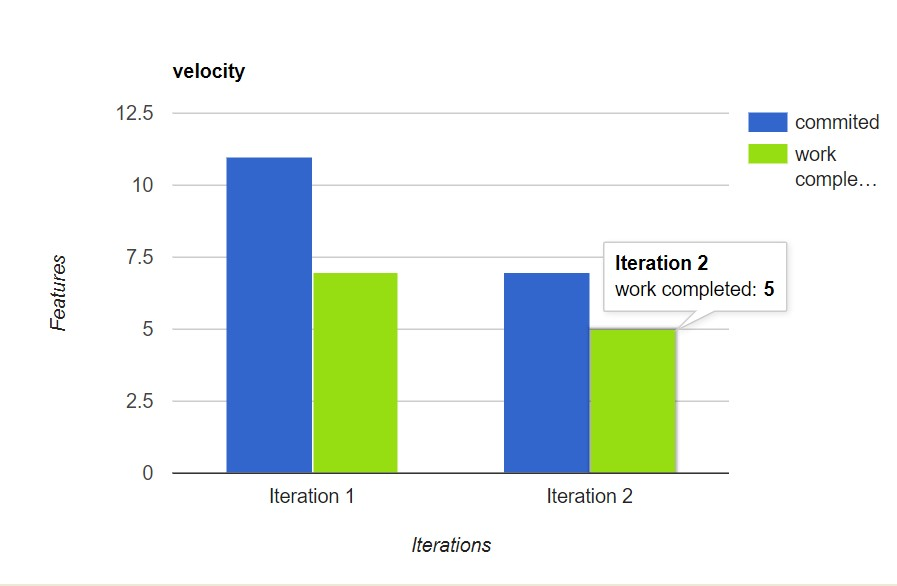

An application to track all your score :))
This application is a box score manager. This application will be used to keep track of scores, their performance, their points, etc. in a sport. From basketball to football, this application will have multiple sports since each sport have a different scoring system. Each sport will have it's detailed box score that keeps track of field goals, points, rebounds, etc. This application can be used to keep track of a performance of a single, or several games, or it can also be used to keep track of games throughout a whole season and multiple seasons.
The target users for this application are people who are involved in sports. These users partake in a sports activity in a casual manner with other players or partake in an organized sport setting or. These users would like to keep scores and track every participant’s performances in a casual pickup game or in an officaited game. These users would also like to track their personal and their team's performances for each sporting event they partake in.
This application will be used to keep track of scores in a sport. It is a way to keep information about an ongoing sporting event. It can also be used to keep information about multiple events either happening at the same time or previous sporting events that already occured, which are saved and archived on the application. The application can be used for record keeping. There are going to be multiple sports in the application, since each sport has a different scoring system from each other. There will also be a generic score box so that users can design how they want to keep scores for household games like ludo etc. This will include how many points to add, how long the sport should last, and more.
Unlike other bookkeeping apps, our apps will help users keep the games and scores more organised by being game specific. The benefit of using our application over others is that with ours, it is built to specialize in what it does so there are features that make it best suited towards sports and score keeping activities such as being able to keep scores over multiple events, being able to create add and edit teams,being able to pick desired sport Since different sports have different Scoring systems. Users will also be able to start and stop the timers for sports that have the feature implemented.
We will just keep it simple and discuss what went right and wrong with our project
